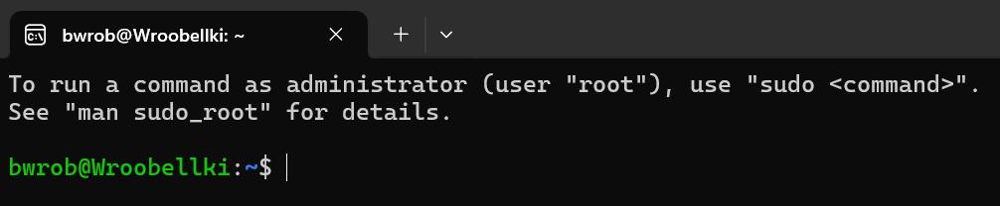

Windows, Linux, and You: Ménage à trois
Tired of the same old Windows vs. Linux beef among PC superusers? Well, get ready to become a mediator in this feud. I’ll show you how to get the best of both worlds.
Pros and cons
Windows OS has long been the dominant platform for mainstream consumers and businesses. It offers good hardware compatibility, de facto the PC gaming experience and is friendly to the casual user. However, Windows has significant limitations in terms of system control and software development tools.
Linux, on the other hand, is an operating system created by developers and for developers (and system administrators). It provides infinite flexibility and a deep pool of open-source tools. But the learning curve is steep, the open-source projects often get abandoned and with great power (sudo) comes great responsibility (and sometimes system reinstall).
Actually, to publish this post in the most convenient and elegant way, I needed to switch to Linux. The Windows quarto CLI fails with some certification errors, coming from deno, that I can’t be bothered to clean up. Discovered this while writing these words as my previous approach was much messier. Irony is the ambrosia of life (for me at least).
Bridging the gap
At this point even Microsoft — a strong contrarian to Linux in the past — embraced the usefulness of Linux shell at your fingertips. Imagine having the familiar interface of Windows for your everyday tasks. Combine it with a the raw power and controllability of Linux for when you need to dive deep into development or system administration. And limited stakes once you (inevitably) remove half of your file system with a bash script. Enter Windows Subsystem for Linux (WSL): a ticket to 10x-ing your software development on Windows.
WSL vs. Virtual Machines: What’s the Difference?
You might be wondering how WSL differs from a traditional virtual machine (VM). While both provide a way to run Linux on Windows, they operate in different ways. A VM emulates a virtual computer within your computer, complete with its own operating system and make-belive hardware resources. This makes VMs resource-intensive and can impact overall system performance. They are also hard to set up and maintain.
WSL, on the other hand, is a more lightweight approach. It integrates Linux directly into the Windows kernel, allowing for faster boot times, better performance, and seamless file sharing between Windows and Linux environments.
Installing and setting up WSL
First, we need to set up the WSL and install a chosen Linux distribution. Fortunately, this is “super easy, barely an inconvenience”. You can choose from a list of distros pre-packaged by Microsoft or download and build an image from scratch. You can even build Arch and be legally allowed to say BTW, I use Arch (on Windows). For this guide, we’ll take a more conventional approach and opt for the long-term support (LTS) version of Ubuntu. Now, open the Powershell with administrative privileges and run:
These commands ensure that WSL is up-to-date and displays the installed WSL version.
Our next command will be:
This yields a curated list of pre-packaged Linux distributions that Microsoft provides, making the process almost effortless.
For the installation itself:
Reboot the Windows system and you’ll see `Ubuntu’ among your applications. 
Base setup — new shell and package manager
There is an additional benefit we can reap with just a bit of more work — a fully system-agnostic setup. By having Linux kernel run on Windows, we unified 2 out of 3 giants. The only pillar that is missing is the Mac OS. But wait, it’s based on Unix as well! It just uses different default shell and lacks a package manager, as Apple doesn’t trust its clients. zsh offers a more interactive and customizable shell experience compared to the default bash. Homebrew, often referred to as the “missing package manager for macOS”, provides a convenient way to install additional software on Linux systems. Let’s change the terminal shell to zsh in our Ubuntu installation and compile a secondary (to apt-get) package manager – brew.
Brewing starts
Before we dive into installing Homebrew, we need to equip our system with the essential tools. The build-essential package provides a collection of compilers and libraries necessary for building software from the source code. Git is a version control system used for managing code projects.
Let’s install these prerequisites using the following command:
Execute the installation script for Homebrew:
INSTALL_PATH="https://raw.githubusercontent.com/Homebrew/install/HEAD/install.sh"
/bin/bash -c "$(curl -fsSL $INSTALL_PATH)"To make Homebrew accessible from your shell, you need to load its environment variables. The following command achieves this and subsequently runs a diagnostic check:
Doctor’s orders to append brew to some set of paths! Let’s do this then:
Z-shell — sea-shell
Homebrew makes package management a breeze. Let’s install zsh, a powerful and customizable shell.
This will take you to interactive .zshrc file setup. The file contains commands that are run each time a shell is spawned. You can either generate empty file with 0 or go through the interactive setup with 1.
Add the brew initialization to .zshrc file as well. This way brew will always be by your side!
Check the default shell and set it to zsh:
GitHub command line tool
Remember git != GitHub, we need a way to authenticate and use Github from CLI. There’s a tool for that!
Now create a convenient directory and copy your favourite GitHub repo:
Connect to Visual Studio Code
While WSL grants us the power of Linux, let’s not forget the user-friendly interface of Windows. When it comes to software development, we can achieve the perfect blend by integrating Visual Studio Code (VSC) with our WSL environment.
Here’s how:
Install the WSL Extension in VSC: Fire up VSC on your Windows machine and head over to the Extensions tab. Search for “WSL” and install the official extension by Microsoft: WSL extension.
Launching VSC from WSL: Within your WSL terminal, you can directly invoke VSC as if it were running natively on Windows. Use the following command:
In the next post I will show you how to set up Python environment in Linux. Stay tuned :) .
Download the Ubuntu shell script here.